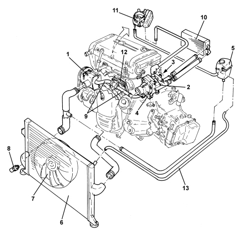
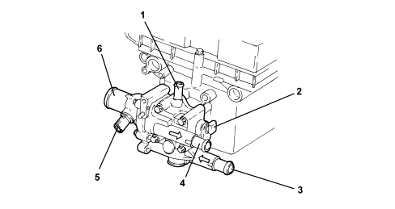
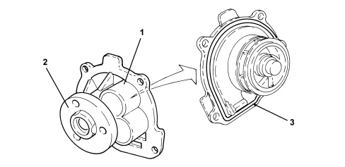

INTRODUCTION - ENGINE COOLING
- Path
- Descriptions > 10 ENGINE > 1088 ENGINE COOLING > INTRODUCTION - ENGINE COOLING
- Kind
- system description
- Applies to
- engines: 1.8; all production periods
- Interactive page
- https://sloeber94.github.io/elrnDB-fCrm/en/#/194002415
Applies to: engines: 1.8; all production periods
ENGINE COOLING SYSTEM

1. Water pump
2. Thermostat
3. Coolant temperature sensor on thermostat
4. Thermostat temperature regulator
5. Supply reservoir
6. Radiator
7. Fan
8. Coolant temperature sensor on radiator
9. Water pump rigid inlet pipes
10. Passenger compartment heater assembly
11. Heated throttle body
12. Water/engine oil heat exchanger
13. Degassing pipe
THERMOSTAT
The electrically adjusted thermostat unit is made from plastic.
The weight of the component is reduced thanks to the choice of this material.
A special feature of this thermostat is the possibility of regulating the operating temperature of the engine coolant depending on certain parameters managed by the engine management control unit, such as: engine rpm, load conditions, gear engaged and outside temperature.
The thermostat intervention temperatures vary from 90 °C (electrical intervention) to 105 °C (thermal intervention). Compared with a normal thermostat, the thermal opening temperature is considerably higher allowing the temperature of the coolant, in average load conditions, to be increased with a reduction in the temperature difference between the radiator oulet and the fluid in the engine with a consequent decrease in the loss in heat from the engine walls due to a lesser thermal rise; all of this is translated into an engine with improved thermal balance with a consequent reduction in fuel consumption.
- Intervention stage at 105 °C
In minimum or medium load conditions or in low outside temperarture conditions, the regulation of the thermostat only takes place thermally via the expandable element in the thermostat; the intervention level is higher compared with a normal thermostat which translates into the advantages mentioned above.
- Intervention stage at 90 °C
In medium-full load conditions or with high outside temperature conditions, as a result of which the temperature of the coolant already tends to be higher, during normal operation it is necessary to wait for the fluid to reach a temperature of 105 °C for the thermostat to open with consequent overheating of the engine.
To prevent this problem there is an electrical resistance inside the thermostat, directly operated by the engine management control unit which, depending on the engine speed, load conditions, gear engaged and outside temperature, energizes the resistance which, heating the expandable element, "fools" the thermostat allowing a controlled opening at 90 °C.
In this way the temperature is lowered bringing it to a correct operating temperature value.

1. Supply for heating throttle body
2. Coolant temperature sensor
3. Return from passenger compartment internal heater
4. Supply to passenger compartment heater
5. Electrically regulated thermostat electrical connector
6. Supply to the radiator
There is a second coolant temperature sensor (1) at the radiator oulet hose.
The following reach the engine management control unit: the engine output coolant temperature signal (detected by the sensor on the thermostat) and the radiator output fluid temperature signal (detected by the sensor on the radiator).
The control unit processes the signals and, depending on the parameters set, it either does or does not control the resistance on the thermostat for the advanced opening of the thermostat and, if necessary, activates the engine cooling fan.
In this system the activation of the fan is considerably reduced because the intervention of the electrically regulated thermostat makes it possible to keep the engine correctly thermally balance and the intervention of the fans is only requested when the action of the thermostat is insufficient.
WATER PUMP
The water pump is housed in the crankcase front cover and is controlled by the auxiliary drive belt.
The seal between the pump cover and casing is produced by an O-ring housed in the special groove in the edge of the cover.

1. Water pump
2. Flange for drive pulley
3. O-ring